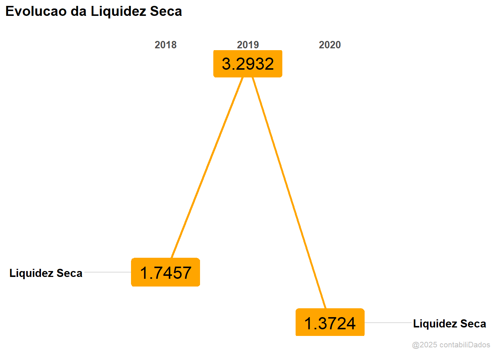

Índice de Liquidez Seca
Descrição
Essa função calcula o Índice de Liquidez Seca baseado em vetores relativos às contas de ativo circulante e passivo circulante. Apresenta como resultado uma lista com 5 itens:
Gráfico se o parâmetro
relatorioforTRUEouT, mostra um gráfico com a evolução da Liquidez Seca da empresa durante os períodos. Se forFALSEouF, o gráfico não é apresentado;Contas que corresponde ao banco de dados com as contas informadas para cálculo do indicador;
Índice o índice de Liquidez Seca dos períodos informados;
Análise Vertical Análise Vertical das contas informadas no item 1;
Análise Horizontal Análise Horizontal das contas informadas no item 1.
Todos os itens da lista são bancos de dados no formato tibble que podem ser usados individualmente durante o processo de análise de dados.
Como Usar
ind_liqSeca(
indicador = "Liq Seca",
periodo = 2019:2020,
cxEquiv = c(8, 10),
estoque = c(150, 200),
ctaRecCP = c(400, 300),
outAtvCirc = c(1, 3),
fornec = c(50, 20),
dividasCP = c(30, 40),
outPasCirc = c(10, 8),
atvTotal = c(900, 800),
relatorio = T
)Argumentos
| Parâmetro | Descrição |
|---|---|
indicador |
Um vetor tipo character com o nome do indicador |
periodo |
Vetor numérico indicando o período da análise |
cxEquiv |
Vetor com os valores do caixa e equivalentes de caixa (Ativo Circulante) |
estoque |
Vetor com os valores do estoque (Ativo Circulante) |
ctaRecCP |
Vetor com os valores do contas a receber (Ativo Circulante) |
outAtvCirc |
Vetor com os valores de outros ativos circulantes (Ativo Circulante) |
fornec |
Vetor com os valores de fornecedores (Passivo Circulante) |
dividasCP |
Vetor com os valores de empréstimos e financiamentos de curto prazo (Passivo Circulante) |
outPasCirc |
Vetor com os valores de outros passivos circulantes (Passivo Circulante) |
atvTotal |
Vetor com os valores do Ativo Total |
relatorio |
Mostra gráfico? (TRUE/FALSE) |
Detalhes
Liquidez seca é uma medida financeira que indica a capacidade de uma empresa de cumprir suas obrigações de curto prazo sem a necessidade de recorrer a seus estoques. Demonstra, portanto, a capacidade de uma empresa de pagar suas dívidas imediatas com ativos líquidos que não incluem seus estoques.
Essa medida é importante porque ajuda a avaliar a capacidade da empresa de lidar com eventuais problemas financeiros, como quedas de vendas ou aumento de despesas, sem afetar suas operações. Além disso, é um indicador importante para os investidores, pois empresas com alta liquidez seca são consideradas menos arriscadas, já que têm maior capacidade de honrar suas obrigações de curto prazo.
Indicamos essa análise quando a empresa apresentar dificuldade com o giro de seus estoques. Em codições normais, não haveria motivos para a empresa não conseguir rotacionar seus estoques. Quando há indicativos de que a rotação dos estoques ficará prejudicada, esse indicador poderá representar melhor a capacidade das empresas em quitar suas dívidas de curto prazo.
É representado pela fórmula:
\[ \frac{AC - Est}{PC} \]
em que: AC é o Ativo Circulante, Est é o estoque e PC é o Passivo Circulante
Para melhorar o processo de análise, desmembramos os valores de Ativos Circulante e Passivo Circulante da seguinte forma: AC = cxEquiv + estoque + ctaRecCP + outAtvCirc e para PC = fornec + dividasCP + outPasCirc. O detalhe de cada conta foi apresentado na seção Argumentos.
Considernado o desmembramento das contas tem-se que a liquidez seca corresponde a:
\[ \frac{(cxEquiv + ctaRecCP + outAtvCirc)}{(fornec + dividasCP + outPasCirc)} \]
A equação deve contemplar todas as contas do ativo circulante com exceção da conta estoque.
Exemplo:
Para utilizar a função ind_liqSeca precisamos carregar o pacote cntdd.
Após carregar o pacote, vamos simular uma situação em que temos os valores e queremos lançá-los, individualmente na função. Para cada parâmetro, precisamos informar os valores correspondentes. Importante observar que a quantidade de valores nas contas deve ser igual ao número de períodos informados no parâmetro periodo.
No exemplo abaixo, informamos os anos de 2018 a 2020 (3 anos) por meio do vetor com a sequência 2018:2020. O nome que escolhemos para indicador foi Liquidez Seca. Os demais vetores correspondem aos valores das contas (3 valores) para cálculo do indicador. Também escolhemos que nessa análise deveria ser apresentado um gráfico do indicador, então atribuímos o valor T ou TRUE para o parâmetro relatorio.
ind_liqSeca(
indicador = "Liquidez Seca",
periodo = 2018:2020,
cxEquiv = c(500,300,400),
estoque = c(2000,3000,4000),
ctaRecCP = c(2500, 5000, 2800),
outAtvCirc = c(20, 35, 80),
fornec = c(1200, 1400, 1600),
dividasCP = c(500, 200, 750),
outPasCirc = c(30, 20, 40),
atvTotal = c(10000, 12000, 11000),
relatorio = T)$Contas
# A tibble: 8 × 4
conta `2018` `2019` `2020`
<chr> <dbl> <dbl> <dbl>
1 cxEquiv 500 300 400
2 estoque 2000 3000 4000
3 ctaRecCP 2500 5000 2800
4 outAtvCirc 20 35 80
5 fornec 1200 1400 1600
6 dividasCP 500 200 750
7 outPasCirc 30 20 40
8 atvTotal 10000 12000 11000
$Indice
# A tibble: 1 × 4
conta `2018` `2019` `2020`
<chr> <dbl> <dbl> <dbl>
1 Liquidez Seca 1.75 3.29 1.37
$`Analise Vertical`
# A tibble: 7 × 4
conta `2018` `2019` `2020`
<chr> <chr> <chr> <chr>
1 AV.cxEquiv 5,00% 2,50% 3,64%
2 AV.Estoque 20,00% 25,00% 36,36%
3 AV.ctaRecCP 25,00% 41,67% 25,45%
4 AV.outAtvCirc 0,20% 0,29% 0,73%
5 AV.fornec 12,00% 11,67% 14,55%
6 AV.dividasCP 5,00% 1,67% 6,82%
7 AV.outPasCirc 0,30% 0,17% 0,36%
$`Analise Horizontal`
# A tibble: 7 × 3
conta `2019` `2020`
<chr> <chr> <chr>
1 AH.CxEquiv -40,00% 33,33%
2 AH.Estoque 50,00% 33,33%
3 AH.ctaRecCP 100,00% -44,00%
4 AH.outAtvCirc 75,00% 128,57%
5 AH.fornec 16,67% 14,29%
6 AH.dividasCP -60,00% 275,00%
7 AH.outPasCirc -33,33% 100,00%
$plot
Como esperado, foi apresentado o gráfico da Liquidez Seca, mais 4 itens: Contas, Índice, Análise Vertical e Análise Horizontal. Agora, é só analisar o indicador com as respectivas contas que o compõe.
Para uma análise mais específica, vamos admitir que queremos apenas o item Índice. Vamos mostrar como captar apenas esse item e mostrá-lo em uma tabela com melhor design. O design da tabela será dado pelo pacote kableExtra, então vamos carregá-lo. Vamos carregar, também, o pacote dplyr para fazer a análise dos dados.
library(cntdd)
library(kableExtra)
# Usamos suppressWarnings e suppressMessages para omitir mensagens e avisos
# durante o carregamento do pacote dplyr
suppressWarnings(suppressMessages(
library(dplyr)
))Também vamos extrair os dados diretamente banco de dados dt_contabil do pacote cntdd. Nesse procedimento, não precisamos digitar cada vetor dos para os parâmetros. No banco de dados dt_contabil temos mais uma empresa, filtramos apenas a empresa alpha para fazer nossas análises.
Definimos o nome do nosso banco de dados para análise como dadosAlpha. Vamos ver sua estrutura:
glimpse(dadosAlpha)Rows: 6
Columns: 38
$ empresa <chr> "alpha", "alpha", "alpha", "alpha", "alpha", "alpha"
$ ano <int> 2016, 2017, 2018, 2019, 2020, 2021
$ caixaEquiv <int> 5198, 10517, 8803, 14299, 39659, 34950
$ aplicFinanc <int> 246286, 339427, 235388, 273264, 541474, 236951
$ clientesCP <int> 326524, 348944, 396347, 428123, 620133, 818424
$ estoques <int> 114409, 117527, 156229, 185886, 301247, 466517
$ outrosAtvCirc <int> 38943, 69255, 75196, 113989, 118040, 148544
$ atvCirc <int> 731360, 885670, 871963, 1015561, 1620553, 1705386
$ clientesLP <int> 14162, 11898, 11101, 10772, 2655, 4428
$ investimento <int> 937, 3029, 3442, 3124, 3123, 2963
$ imobilizado <int> 75651, 70042, 86161, 314902, 327555, 418239
$ intangLiquido <int> 89019, 82011, 69558, 77717, 859397, 1051033
$ outrosAtvNaoCirc <int> 28299, 34609, 39993, 41462, 120057, 304066
$ atvNaoCirc <int> 208068, 201589, 210255, 447977, 1312787, 1780729
$ forneced <int> 68809, 108131, 114039, 139769, 413394, 595164
$ empFinCP <int> 81780, 169555, 45542, 163852, 248004, 514541
$ outrosPassCirc <int> 58423, 91836, 105413, 177572, 282452, 463348
$ passivoCirc <int> 209012, 369522, 264994, 481193, 943850, 1573053
$ empFinLP <int> 28042, 18657, 69839, 23364, 408834, 39075
$ outrosPassNaoCirc <int> 8844, 10457, 10730, 186361, 184069, 225330
$ passivoNaoCirc <int> 36886, 29114, 80569, 209725, 592903, 264405
$ patLiquido <int> 693530, 688623, 736655, 772620, 1396587, 1648657
$ ativoTotal <int> 939428, 1087259, 1082219, 1463539, 2933340, 3486116
$ receita <int> 1283203, 1408886, 1580984, 1738990, 1647607, 3027870
$ custoMercVend <int> 714366, 762921, 845023, 935693, 865520, 1434437
$ despVendas <int> 313479, 346107, 392405, 439467, 548811, 915882
$ despAdm <int> 96149, 117866, 145877, 190560, 168007, 327469
$ despOperac <int> 412126, 466152, 537875, 572255, 686700, 1108236
$ receitaFinanc <int> 36926, 35051, 41463, 25599, 67862, 43884
$ despesaFinanc <int> 31050, 25420, 63502, 44422, 106750, 110857
$ impostoRenda <int> 42304, 29475, 28327, 44309, 6186, 62273
$ depreciacao <int> 26733, 33793, 42336, 83180, 83989, 109511
$ ebit <int> 156710, 179811, 198085, 231041, 95386, 485197
$ lucroLiquido <int> 120282, 159966, 147719, 167908, 50312, 357519
$ lair <int> 162586, 189442, 176047, 212218, 56499, 418225
$ flxCxOper <int> 105328, 180074, 122029, 212172, 228155, 250547
$ flxCxInvest <int> -21703, -94960, 74806, -88448, -307860, -11155
$ flxCxFinanc <int> -87013, -79850, -199408, -118347, 105061, -241822Agora vamos rodar a função ind_liqSeca com os dados do banco de dados dadosAlpha. Vamos chamar o indicador de “Liquidez Seca” e não vamos pedir para apresentar o gráfico (relatorio = F). Como queremos usar apenas o item Índice vamos definir um objeto chamado dadosLiqSeca para assumir o resultado da função.
dadosLiqSeca <-
ind_liqSeca(
indicador = "Liquidez Seca",
periodo = dadosAlpha$ano,
cxEquiv = dadosAlpha$caixaEquiv,
estoque = dadosAlpha$estoques,
ctaRecCP = dadosAlpha$clientesCP,
outAtvCirc = dadosAlpha$outrosAtvCirc,
fornec = dadosAlpha$forneced,
dividasCP = dadosAlpha$empFinCP,
outPasCirc = dadosAlpha$outrosPassCirc,
atvTotal = dadosAlpha$ativoTotal,
relatorio = T
)Como definimos um objeto (dadosLiqSeca), não temos o resultado diretamente. Agora vamos acessar o objeto dadosLiqSeca e requisitar apenas o item Índice e logo após vamos definir um design básico de tabela.
| Indicador | 2016 | 2017 | 2018 | 2019 | 2020 | 2021 |
|---|---|---|---|---|---|---|
| Liquidez Seca | 1.77 | 1.16 | 1.81 | 1.16 | 0.82 | 0.64 |
Agora é só analisar!
Quem contribuiu
Kléber: Construiu a função e o arquivo de ajuda para o blog.